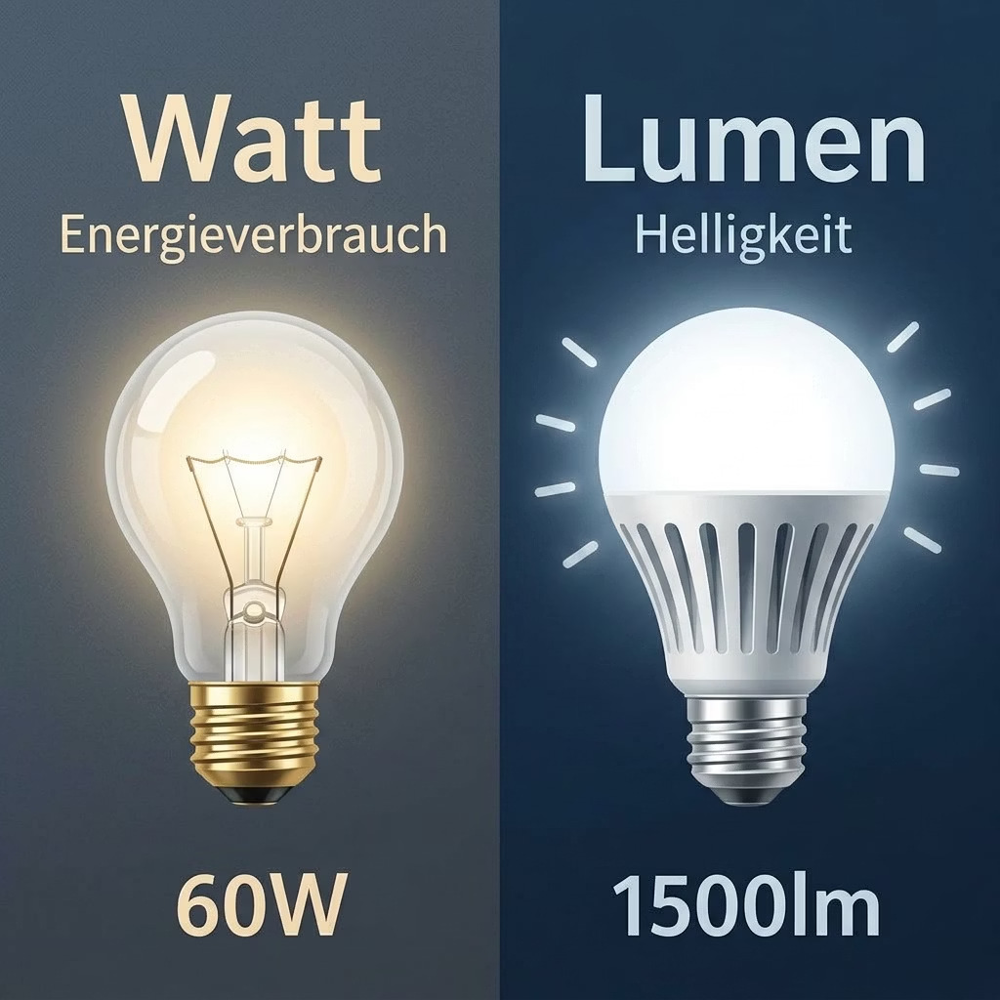
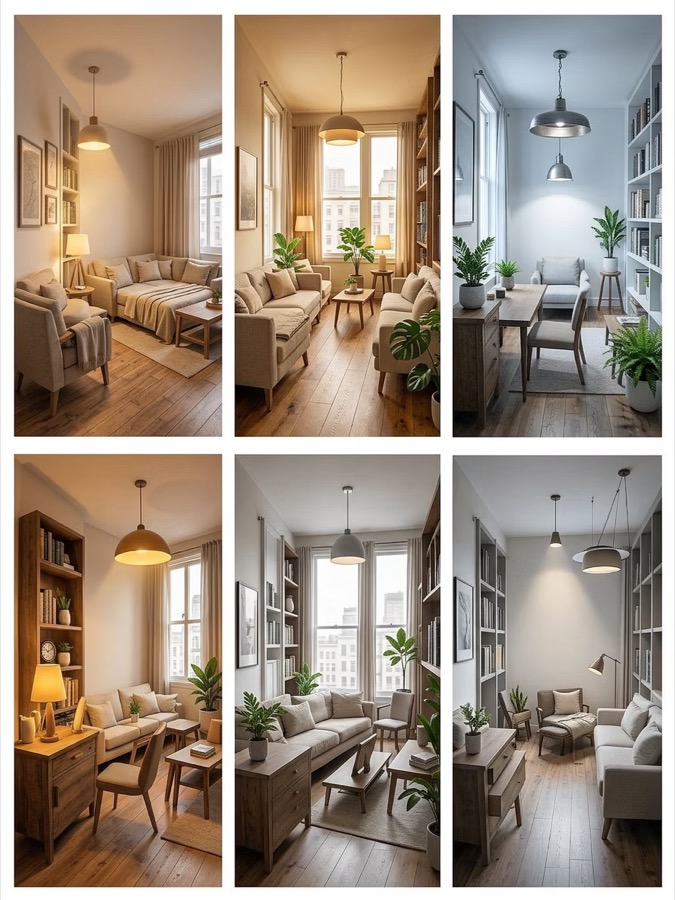

Information über LED: Lichtfarbe, Qualität und Farbwiedergabe
Licht ist mehr als Helligkeit. Kelvin, Lumen, CRI, Ra-Wert — was diese Werte wirklich bedeuten, verständlich und praxisnah erklärt.

Lumen statt Watt:
Helligkeit neu gemessen
Wer früher eine Glühbirne kaufte, orientierte sich an Watt: mehr Watt bedeutete mehr Helligkeit. Diese einfache Gleichung gilt heute nicht mehr. Watt misst ausschließlich den Energieverbrauch, nicht die Helligkeit. Die entscheidende Einheit für Lichtstrom ist das Lumen. Eine moderne LED mit nur 8 Watt kann die gleiche Helligkeit erzeugen wie eine 60-Watt-Glühbirne.
Anders als eine Glühbirne, die einfach einen Draht zum Glühen bringt, erzeugt eine LED Licht auf elektronischem Weg: Ein winziger Chip strahlt blaues Licht aus, das durch spezielle Beschichtungen in weißes Licht umgewandelt wird. Durch die Zusammensetzung dieser Beschichtung lässt sich der Farbton des Lichts gezielt steuern.

Der Farbeindruck
des Lichts
Jedes Licht hat einen Farbton — von gemütlich warm bis kühl und sachlich. Gemessen wird das in der Einheit Kelvin (K). Die Faustregel: Kleine Zahl = warmes, rötliches Licht. Große Zahl = kühles, bläuliches Licht. Die richtige Wahl beeinflusst Stimmung, Konzentration und Wohlbefinden entscheidend.
- Warmweiß (unter 3.300 K): Entspannung, Gemütlichkeit, Wohnlichkeit. Ideal für Wohnzimmer, Schlafzimmer und Restaurants.
- Neutralweiß (3.300–5.300 K): Sachlich und klar. Perfekt für Büros, Küchen und Arbeitsbereiche — fördert Konzentration.
- Tageslichtweiß (über 5.300 K): Aktivierend. Geeignet für Werkstätten, Krankenhäuser und Bereiche mit hohem visuellen Anspruch.
Die neue Qualitätsschwelle
Stellen Sie sich vor, Sie halten einen roten Pullover unter eine Lampe — und er sieht plötzlich bräunlich aus. Daran ist die schlechte Farbwiedergabe schuld. Der sogenannte Ra-Wert (auch CRI genannt) misst auf einer Skala von 0 bis 100, wie natürlich Farben unter einer Lichtquelle erscheinen. 100 entspricht Sonnenlicht. Gesetzlicher Mindeststandard ist Ra 80, doch erst ab Ra 90+ sehen Farben wirklich so aus, wie sie sein sollten.
Ra 60–70
Einfache Straßenbeleuchtung, Lagerhallen.
Ra 80
Gesetzlicher Mindeststandard, Büros, Schulen. Viele Farbtöne wirken hier flach — insbesondere Rottöne und Hautfarben.
Ra 90+
Wohnräume, Küche, Bad, Galerien. Gesättigte, lebendige Farbtöne nahe am natürlichen Sonnenlicht.
Ra 95–98
Museen, Fotostudios, medizinische Bereiche.
- Gut zu wissen: Der Ra-Wert wird anhand von acht Testfarben berechnet. Ausgerechnet kräftiges Rot — eine der wichtigsten Farben im Alltag (Fleisch, Lippen, Kleidung) — ist dabei nicht enthalten. Deshalb kann eine Lampe mit Ra 80 trotzdem Rottöne flach und leblos aussehen lassen.
Warum Ra 90+ den entscheidenden Unterschied macht
Der Unterschied zwischen Ra 80 und Ra 90+ ist im Geschäft kaum zu erkennen — aber zu Hause, Tag für Tag, wird er deutlich sichtbar.
Küche
Frische Lebensmittel sehen appetitlich und natürlich aus. Rotes Fleisch, grünes Gemüse und goldbraunes Brot entfalten ihre volle Farbwirkung.
Bad
Hauttöne werden realistisch wiedergegeben. Beim Schminken, Rasieren oder der Hautpflege ist authentische Farbwiedergabe unverzichtbar.
Wohnraum
Möbel, Textilien und Kunstwerke kommen erst bei hoher Farbwiedergabe zur Geltung. Wer in hochwertige Einrichtung investiert, sollte bei der Beleuchtung nicht sparen.
Licht für den Menschen
Unser Körper hat eine innere Uhr, die maßgeblich durch Licht gesteuert wird. Kühles, helles Licht am Morgen macht wach. Warmes, gedämpftes Licht am Abend signalisiert dem Körper: Zeit zum Entspannen. Moderne LED-Systeme können diesen natürlichen Wechsel automatisch nachbilden — sie passen Farbtemperatur und Helligkeit im Tagesverlauf an. Das Ergebnis: besserer Schlaf, mehr Konzentration tagsüber. Wie so ein Lichtkonzept in Ihren Räumen wirkt, zeigt vorab eine fotorealistische 3D-Planung.
Morgens (5.000–6.500 K)
Kühles, helles Licht — wie ein klarer Morgen. Macht wach, fördert die Konzentration und bringt den Körper in Schwung.
Mittags (4.000 K)
Neutrales, klares Licht — sachlich und angenehm. Ideal zum Arbeiten, Lesen und Lernen.
Abends (2.700–3.000 K)
Warmes, gedämpftes Licht — wie Kerzenschein. Signalisiert dem Körper: Feierabend. Fördert Entspannung und gesunden Schlaf.
Was auf der Verpackung fehlt
Neben Lumen, Kelvin und Ra gibt es Qualitätsfaktoren, die auf keiner Verpackung stehen — die aber über Komfort und Lebensdauer Ihrer LED entscheiden.
Flimmerfreies Licht
Viele günstige LEDs flimmern — so schnell, dass das Auge es nicht sieht, aber der Körper es trotzdem spürt: Kopfschmerzen, müde Augen, Konzentrationsprobleme. Achten Sie beim Kauf auf die Kennzeichnung „flimmerfrei” oder „flicker-free”.
Optimiertes Wärmemanagement
Auch LEDs erzeugen Wärme — und die muss weg, sonst altert der Chip viel schneller. Gute Leuchten haben dafür Kühlkörper aus Metall eingebaut. Das Ergebnis: Eine Premium-LED hält 25.000–50.000 Stunden (bei 3 Stunden am Tag über 20 Jahre), eine Billig-LED oft nur einen Bruchteil davon.
Systemgedanke statt Retrofit
Die besten Ergebnisse liefern LED-Leuchten, die von Grund auf als Ganzes entwickelt wurden — alle Bauteile aufeinander abgestimmt, statt eine alte Fassung mit einem neuen Leuchtmittel zu bestücken. Mehr dazu im Beitrag Umrüstung alter Lichtsysteme.
Drei Kriterien für die Kaufentscheidung
Diese drei Kriterien sind aussagekräftiger als Preis oder Markenname allein.
Lumen statt Watt
Helligkeit immer in Lumen vergleichen. Für einen Wohnraum sind 300–500 Lumen pro Quadratmeter ein guter Richtwert. Eine 8-Watt-LED mit 800 Lumen ersetzt eine 60-Watt-Glühbirne.
Ra-Wert kritisch prüfen
Nach dem echten Ra-Wert fragen — nicht nur nach „Ra > 80“. Für Wohnbereiche, Küche und Bad gilt: In Ra 90+ investieren.
Farbtemperatur wählen
Warmweiß (2.700–3.000 K) für Wohn- und Schlafbereiche. Neutralweiß (4.000 K) für Arbeitsbereiche. Tageslichtweiß nur dort, wo Aktivierung gewünscht ist.
- Profi-Tipp: Fragen Sie nach dem R9-Wert (Rotwiedergabe) und ob die Leuchte flimmerfrei ist. Diese Angaben stehen oft nicht auf der Verpackung, sondern nur im Datenblatt — aber genau daran erkennen Sie einen seriösen Hersteller.
LED-Wissen kompakt
Wie viele Lumen brauche ich pro Quadratmeter?
Für Wohnräume sind 300–500 Lumen pro Quadratmeter ein guter Richtwert. Küchen und Arbeitsbereiche benötigen eher 500 Lumen pro Quadratmeter, Schlafzimmer kommen mit 300 aus. Eine 8-Watt-LED mit 800 Lumen ersetzt eine klassische 60-Watt-Glühbirne.
Welche Farbtemperatur ist die richtige für Wohnzimmer und Schlafzimmer?
Warmweißes Licht mit 2.700–3.000 Kelvin. Es fördert Entspannung, unterstützt die Melatoninproduktion am Abend und schafft eine behagliche Atmosphäre ähnlich dem Abendlicht.
Was bedeutet Ra 90 und warum reicht Ra 80 oft nicht?
Der Ra-Wert (CRI) misst, wie natürlich Farben unter künstlichem Licht erscheinen — 100 entspricht Tageslicht. Ra 80 ist gesetzlicher Mindeststandard, doch dabei wirken viele Farbtöne flach, besonders Rottöne und Hautfarben. Erst ab Ra 90+ entfalten Farben in Wohnräumen, Küche und Bad ihre volle Natürlichkeit.
Woran erkenne ich flimmerfreie LED-Leuchten?
Auf die Kennzeichnung „flimmerfrei“ bzw. „flicker-free“ achten. Hochwertige Treiber-Elektronik eliminiert das Flimmern vollständig. Der Flimmerfreiheits-Index steht oft nur im technischen Datenblatt — ein Zeichen echter Hersteller-Transparenz.
Wie lange hält eine hochwertige LED?
Premium-LEDs mit gutem Wärmemanagement halten 25.000–50.000 Stunden — bei drei Stunden Nutzung pro Tag über 20 Jahre. Billig-LEDs erreichen oft nur einen Bruchteil davon, weil die Wärme nicht effizient abgeführt wird.
Mehr über verwandte Themen erfahren Sie in unseren Beiträgen über LED dimmen, LEDs schalten und LED-Treiber.